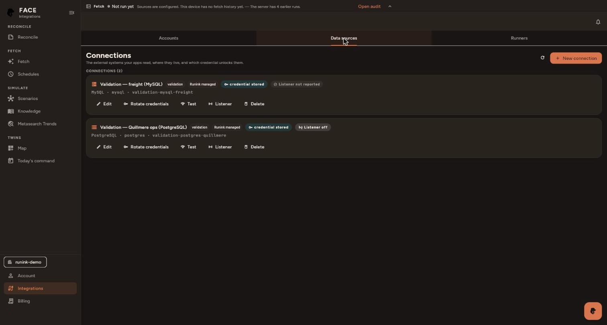
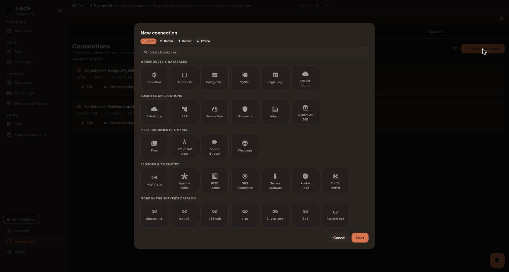

Settings
Settings is where you set up who you are, who your briefs are for, what FACE connects
to, and your plan. Open it with Settings at the foot of the rail (/settings). It
has five tabs: Account, Personas,
Integrations, Subscription and
Chat history. The address
names the tab (/settings?tab=account, personas, integrations or subscription), so
a link or a bookmark opens the right one.
Account
Account (/settings?tab=account) is about you: who is signed in, your preferences,
your sessions and your data.
Admin
If you are an admin of the selected instance, an Admin card comes first. It opens Admin. Nobody else sees it.
Who you are
The identity card lists your Email, Name, Signed in with, Role, Platform admin, Tenant and Account ID. A value the server did not provide reads Not provided. Signed in with is Google account, Password or an API key.
Preferences
- Theme: Light, Dark or System. This device remembers your choice.
- Interface language: the language of the app's screens.
- Agent language: The agent listens to voice commands and reads its answers aloud in the agent language. It is also the language FACE writes its answers in.
- Your role: the persona you are. Your brief is listed first on Briefs. Not set changes nothing. The order of Why's money line follows the persona picked on Ask (Who this run is for), not this setting.
- Offline answers says whether this device can answer offline, and why not.
Security
- Sign out ends this session.
- Sign out everywhere ends every session of yours on every device, this one included. Confirm with Yes, sign out everywhere.
Your data
It stays on your instance. No exit fees, no lock-in. Delete my account deletes your own account for real, after you type your email address: the dialog lists what is deleted and what your organisation keeps, and says that the access list is not edited, so a still-listed address that signs in again gets a new, empty account. If you are the last admin it refuses; if the server cannot be reached it says your account was not deleted. See Delete your account. A copy of your data is asked for from the privacy contact (a link in that dialog). Open-source licences lists the licences of the software the app includes.
Personas
Personas (/settings?tab=personas) holds who a brief is for: Who a brief is for: a
name, the question its brief asks, and the money figure it reads first. What you save
here is shared with everyone on the instance.
Every persona of the instance is a profile: the product's five, in your instance's words if someone reworded one, then the ones your instance added. Each shows:
- what it Reads first: Owed, At risk or the money line's own order (Line order);
- Responsible for, Asks (the question its brief asks) and Plays (None picked: this persona answers for every play.);
- Briefs: how many it has and the next run, or No brief yet;
- Next step: Add a brief for {name} or See the briefs for {name}.
Edit and Add persona open the persona editor, the same one as on Briefs. Save with Save for everyone. An added persona can be deleted (Delete for everyone), and a reworded product persona can be reset (Put back the product's words).
Integrations
Integrations (/settings?tab=integrations) has four sections: Channels,
Systems, Contacts and Runners. The address names the section with
§ion= (channels, data-sources, contacts or runners).
Channels
Channels holds how FACE reaches people: each channel's status (voice, SMS and WhatsApp), the sender numbers, the carrier's write-only secrets and the delivery trail. Everyone with a role on the instance can read it; only an admin can change it.
KEYS & NUMBERS holds the WhatsApp Phone Number, Phone Number, SMS Phone Number, Stripe API Key, Google Credentials (Gmail, Drive) and Google Analytics ID. A secret shows only Configured (hidden) or Not Set. To change it, enter a new value: Enter a new value to replace it. The stored value is never shown.
EMAIL FOR BRIEFS is the mailbox your briefs are emailed from. Briefs by email leave from your own mailbox and go to its own address; FACE has no shared sender. Connect it with Connect Gmail or Connect Microsoft 365 when your instance has those sign-ins set up, or as an SMTP mailbox with Test and connect: FACE logs in to test it and keeps it only if that works. The card shows the address, the provider and whether it can send now.
Systems
Systems is the list of your data sources. Each row shows the connection's name, type and id, where it runs (Runink managed or runs on {runner}), its credential chip (for example credential stored) and its last test. A stored credential is never shown; the chip says only that one is held.
The row buttons are Edit, Rotate credentials, Test, Listener and Delete. Test opens the source with its stored credential on the connection's runner, read-only and time-limited, and reads nothing from it. Delete asks first, because it also deletes the credential bundle. A files connection also offers Index documents.

Add a connection
New connection opens the wizard: Pick a source, fill in its details, choose a runner, then test and save. Its steps are Source, Details, Credentials, Runner and Review.
- Source. Pick a source card from the catalog, or search by product or by system.
- Details. Name the connection and fill in its settings. For a database, choose the Encryption in transit. Every choice encrypts, and there is no plaintext option: Encrypt. Do not verify the certificate., Encrypt and verify the certificate chain. or, the strictest, Encrypt, verify the chain and the hostname.
- Credentials. A credential field is write-only: once saved it is never shown again.
- Runner. Choose where the source is read from. Runink managed runs inside the server. Every test and read of the connection runs on the runner you pick, or is refused.
- Review. Check every value, then select Test & save. A passing test means the source answered; it does not mean data has been read.

A connection proposed by a run opens the same wizard from Confirm, on the proposal's source card with its name filled in. You still enter every address and credential.
For each connector's settings, see Data sources.
Contacts
Contacts lists who the agent may message or call, one row per contact and channel, with whether that channel can reach them. A banner names each channel contacts may use but nobody set up, with a button to set it up.
Import from a system (Import contacts) reads contacts from your connected systems (CRM, ERP, TMS and others). Imported contacts are read-only here: change them at the source and import again, and they are updated, not duplicated.
Runners
Runners lists where reads of your data sources run: the managed runner (Runink managed, part of the server, the default for every connection) and runners on your own network that the server connects to. Add runner registers a self-hosted runner and gives its one-time setup ticket. Each runner shows its state (active, pending or revoked), its health and how many reads it has in flight.
Subscription
Subscription (/settings?tab=subscription) shows your organisation's plan as
Runink recorded it: the plan, its status and the seats. FACE takes no payment itself.
During the trial the workspace is fully usable for 14 days, then read-only until a plan
is bought; see Access and the trial. Plans and
prices are on runink.org.
No subscription is on record for this account. means the record was read and is empty. The subscription record could not be read. This does not mean there is no subscription. means the request failed.
Chat history
The assistant starts empty in each new session. Chat history lists every chat you had with it, newest first, grouped by persona (No persona last). Open one to read its transcript; Continue makes it the assistant's conversation again and opens the panel. Chats are stored sealed in your organisation's storage. A history that could not be read says so and offers a retry.
RPCs behind this page
runink.ui.profile.v1.ProfileService:GetProfile,EndAllSessions.ConfigService.GetIntegrationConfig,SetIntegrationConfig.runink.ui.datasources.v1.ConnectionsServiceandRunnersService.runink.ui.billing.v1.BillingService:GetOverview,ListPlans,QuotePlan.
See the API reference.